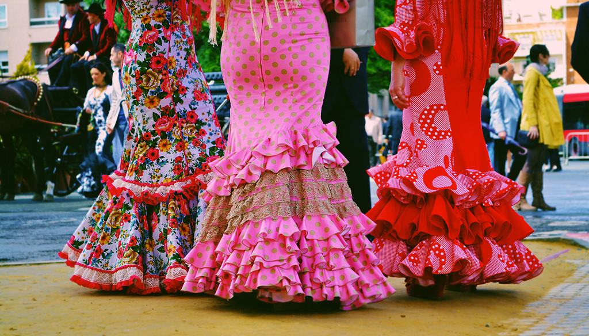
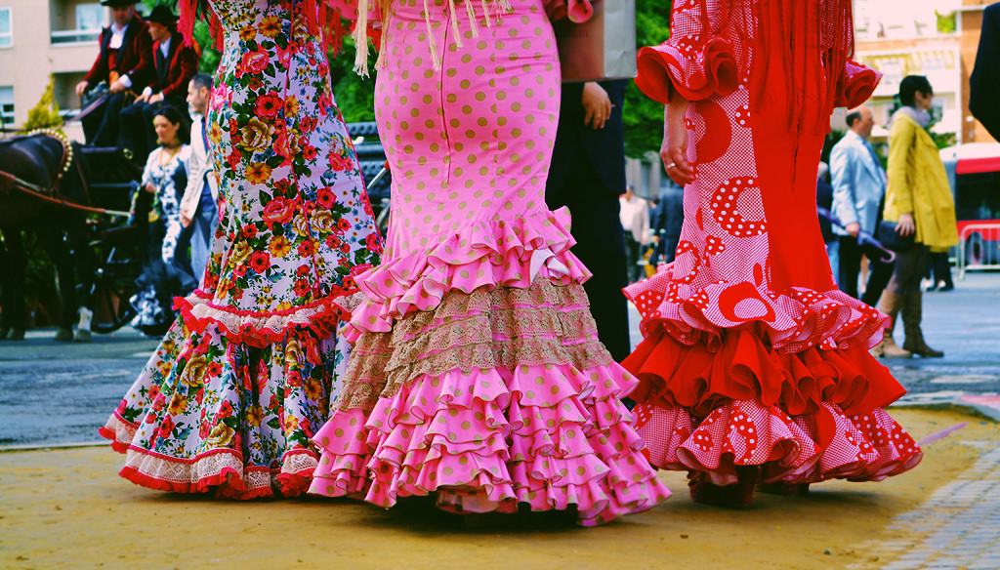

Flamenco Shows
Casa Patas is recognized as one of the most authentic flamenco shows in the city of spain, it has appeared as “the best” in the guidebooks of Spain (Go Madrid, 2019). Casa Patas is a restaurant with a large dining area and spacious bar. The atmosphere is full of wall art , paintings and photographs of guest that came to ‘tablao’ over the years (Go Madrid, 2019).It is located in the center of Madrid , and offers one of the most visual flamenco performances. Flamenco, also known as bailaores (women) and bailaoras (men) express movement through steps, rhythms, and balance. The performance is demonstrated carefully a tabalo, a small stage making you feel as if you are dancing along with them! Join the Casa Patas as they celebrate the style of Flamenco through feelings, movement, and art.
|5 minute walk from the Westin Palace Hotel|
Museo del Prado
One of the top tourist attractions in Madrid is the Museo del Prado. Designed by architect Juan de Villanueva, the 18th-century structure houses a world-class art collection. With a history dating from the 12th century to the early 19th century, the Museo del Prado accommodates 7000 works of art. To finish touring this gallant museum in one visit is preposterous. One would need multiple visits to properly intake the different paintings, sculptures and other works of art. This museum houses collections from a plethora of Spanish Artists including renown ones such as Goya, El Greco, da Ribera and Velásquez which undoubtedly makes it the greatest collection of Spanish paintings worldwide (Whitaker, 2017).
|5 minute taxi ride from the Westin Palace Hotel|
Puerta del Sol
Originally the site of one of the city’s gates, Puerta del Sol should be at the top of your list of places to visit. Sitting atop the Casa de Correos building, the current headquarters of the Madrid regional government, you’ll find the famous clock that all eyes turn to on the last day of the year. For over a century now tradition has it that people across the country usher in the New Year by eating 12 lucky grapes to the twelve chimes of midnight struck by this clock. The Westin Palace Hotel is 8 minutes travel time via bus (Pecker, 2015).
|8 minute bus ride From the Westin Palace Hotel|
The Crystal Palace
A quiet and romantic walk while exploring the elegant mirror structure Palacio de Cristal. Come explore this enchanting palace located in El Retiro Park. Palacio de Cristal built in 1887, made almost entirely of glass stands over 22 meters high (Atlas Obscura, 2019). Inside, capture stunning clips and Florey this structure has offered for over a century. As you take a stroll outdoors near the lake, surrounded by greenery and trees you can also enjoy the beauty of geese, black swans and terrapins swimming in the lake.
|4 minute taxi ride or 12 minute walk From the Westin Palace Hotel|
The Temple of Debod
Madrid sits in a park that is then flanked by some of the city’s most important sites. As the Madrid sunset occurs you can enjoy looking at the effect the sunlight has on such buildings as the Royal Palace or the Guadarrama Mountains (Parker, 2018). The only other places that will offer such views as these are some of the rooftop bars. But they won’t provide you with the peace and solitude as this location does. For anyone who wants to get away from the hustle and bustle of the city then this is the place to go. In fact, make it even more romantic by taking a small picnic with you that you and a loved one can enjoy as you watch the sun slowly fade away.
|21 minute bus ride from the Westin Palace Hotel|